PM faz operações na Zona Norte do Rio para coibir disputa de território por criminosos rivais
[...]
A Polícia Militar realiza uma operação no Morro do Juramento, em Vicente de Carvalho, na Zona Norte do Rio, na manhã
desta sexta-feira (7) [de junho de 2024]. A PM diz tratar-se de uma “ação emergencial” para evitar a movimentação de
criminosos rivais envolvidos em confrontos na comunidade.
[...]
No Morro da Congonha, em Madureira, dois suspeitos morreram. Segundo a PM, os agentes foram chamados à Unidade
de Pronto Atendimento (UPA) de Rocha Miranda onde os homens deram entrada. As investigações indicam que eles
tinham envolvimento com quadrilhas que atuam na região.
Os confrontos também acontecem no Cajueiro, em Madureira, e no Fubá, em Campinho. Moradores afirmam terem
escutado barulho de tiros e de granadas.
“Muito tiro desde 5h30. Em Vaz Lobo, Campinho, tudo é perto. E agora, às 10h, passaram helicópteros perto, teve
bastante tiro, rajadas de tiros. Não consegui sair, precisava sair hoje. E muita gente não conseguiu sair para trabalhar
porque a [Avenida] Edgard Romero também está engarrafada e esse conflito acontece desde cedo", afirmou uma moradora.
De acordo com a Secretaria Municipal de Educação do Rio de Janeiro, três unidades escolares tiveram o funcionamento
impactado pelos tiroteios em Vicente de Carvalho.
CASTRO, N. PM faz operações na Zona Norte do Rio para coibir disputa de território por criminosos
rivais. G1, 7 jun. 2024. Disponível em: https://g1.globo.com/rj/rio-de-janeiro/noticia/2024/06/07/pm-faz
-operacao-no-morro-do-juramento-para-coibir-disputa-de-territorio-por-criminosos-rivais.ghtml.
Acesso em: 21 ago. 2024
Tentativas da Polícia Civil ou Militar de impedir conflitos e atos criminosos muitas vezes ampliam a violência para quem
vive em comunidades periféricas, em qualquer cidade do Brasil. A forma como ocorrem essas operações podem transmitir
a ideia de que todos os seus moradores podem estar envolvidos com o tráfico de drogas, por exemplo. Isto é, as operações
se baseiam em um estigma e acabam por reforçá-lo ao sugerir que os moradores das favelas, em sua grande maioria
pessoas negras e pobres, devam ser criminalizados, uma vez que, na concepção das forças de segurança, é ali que se
encontrariam todos os males da violência.
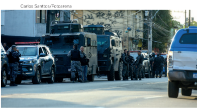
Em reportagem de 2003 da revista Caros Amigos sobre o crime organizado, três promotores de justiça afirmaram que
não há organização criminosa que sobreviva sem a participação do Estado. Eles revelaram que o PCC (Primeiro Comando
da Capital – organização criminosa que atua principalmente no estado de São Paulo) era constituído por líderes que,
algum tempo antes, não eram considerados criminosos perigosos. Entretanto, a partir da inserção desses indivíduos em
um sistema carcerário administrado pelo Estado, com torturas e maus-tratos, eles teriam sido levados ao mundo do crime
organizado.
Operação policial
na comunidade
Cidade de Deus.
Rio de Janeiro (RJ),
2024.
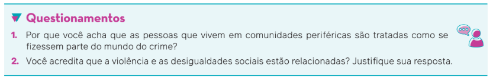
A violência no cotidiano brasileiro
No Brasil, a quantidade de linchamentos vem crescendo. Cada vez mais surgem notícias
sobre um grupo ou uma multidão que decidiu “fazer justiça” com as próprias mãos, em que há
a execução de uma pessoa acusada de ter praticado algum tipo de crime. Um caso de grande
repercussão ocorreu em maio de 2014, com a execução de uma dona de casa na periferia de
Guarujá (SP), tendo como base uma acusação falsa espalhada pela internet. Ela foi espancada
e morta por dezenas de moradores que acreditaram em um boato.
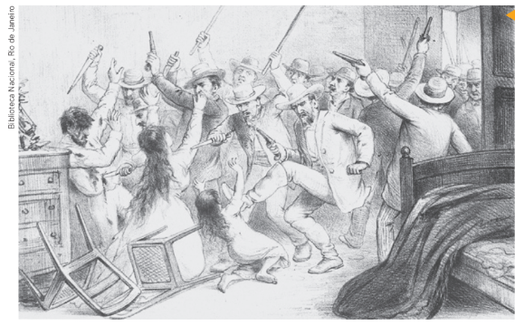
Angelo Agostini. O bárbaro
assassinato do Delegado de Polícia
da Penha do Rio do Peixe (S. Paulo).
Revista Illustrada, Rio de Janeiro,
n. 485, p. 8, 18 fev. 1888.
Os linchamentos são uma forma de violência coletiva, praticada por pessoas comuns com o objetivo de fazer justiça prescindindo do Estado. A gravura de Angelo Agostini, de 1888, retrata que essa é uma prática antiga presente na sociedade brasileira.
O debate sobre a redução da maioridade penal para 16 anos de idade também tem ganhado
força. Devido ao fato de muitos adolescentes menores de 18 anos se envolverem com a
criminalidade, existem diversas propostas para diminuir a idade a partir da qual um jovem pode
ser preso e responder por um crime como adulto. No entanto, devemos estudar o fenômeno
da violência urbana para que possamos ter um conhecimento mais preciso sobre as razões
econômicas e sociais que levam certos indivíduos à prática de crimes e da violência.
A violência urbana, que é aquela que se configura pelo descumprimento de leis e regras no
que se refere à vida e ao patrimônio público no contexto das cidades, pode ser compreendida
como um fenômeno social relacionado à falta de acesso a condições de vida dignas de uma
parcela da população. Está relacionada, portanto, à desigualdade social decorrente de um
modelo econômico que impede parcelas significativas de pessoas de terem outras possibilidades
de existência, longe da violência.
A guerra nas sociedades ameríndias
O fenômeno da violência, como uma questão historicamente presente em todas as sociedades humanas, é um dos objetos
de estudos entre antropólogos e sociólogos. Uma obra importante sobre essa temática é Arqueologia da violência,
escrita pelo antropólogo francês Pierre Clastres (1934-1977), publicada originalmente em 1977. Pesquisando sociedades
ameríndias, Clastres procurou mostrar que elas poderiam ser entendidas como “sociedades-para-a-guerra”, em que grupos
diferentes entre si podem ser vistos como inimigos, podendo ser negados e, consequentemente, destruídos ou submetidos
pelos rivais, como uma afirmação da identidade.
Segundo Clastres, além da possibilidade da guerra, existia uma estrutura de alianças entre sociedades diferentes. A violência
não deveria ser entendida como uma negação das relações sociais, como interpretavam outros antropólogos, mas como
um elemento fundamental para a preservação e a conservação da autonomia desses grupos locais e das relações sociais
vigentes.
Violência nas escolas
O termo “violência” tem origem no latim violentia, que quer dizer “impetuosidade”, “veemência”, derivando da
raiz vis, que significa “força”, “vigor”. Em dicionários encontramos, entre outras definições atuais para o termo, a
ideia de constrangimento físico ou moral exercido sobre alguém. A diferença entre a raiz latina e sua definição moderna
é que a violência também pode ser entendida como psicológica.
A Organização Mundial da Saúde (OMS) propõe a seguinte definição:
O uso intencional da força física ou do poder, real ou em ameaça, contra si próprio, contra outra pessoa, ou
contra um grupo ou uma comunidade, que resulte ou tenha grande possibilidade de resultar em lesão, morte,
dano psicológico, deficiência de desenvolvimento ou privação.
KRUG, E. G. et al. (ed).Relatório mundial sobre violência e saúde. Genebra: Organização Mundial da Saúde, 2002. p. 5.
A OMS amplia a definição de violência, que abarca a prática de atentar contra a própria vida e as situações que
envolvem relações de poder, como as ameaças e as intimidações. Nesse sentido, o bullying (bully = “valentão”, “brigão”)
pode ser tomado como um exemplo de violência que ocorre com certa frequência nas escolas. São formas
agressivas e repetitivas de intimidação e discriminação praticadas contra determinados estudantes, por parte de
um grupo ou até mesmo de um professor.
Dados de pesquisas do Instituto Brasileiro de Geografia e Estatística (IBGE) revelaram que as escolas brasileiras
apresentam um ambiente interno no qual a propensão ao bullying ultrapassa em duas vezes os índices encontrados
nas escolas de outros 48 países.
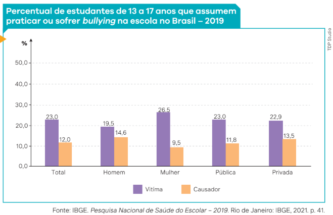
A Pesquisa Nacional
de Saúde do Escolar,
realizada pelo IBGE
em 2019, indica que
a prática do bullying
envolve entre 12% e
23% dos estudantes
brasileiros. Entre os
agressores, a maioria
dos estudantes é do
sexo masculino; já as
estudantes do sexo
feminino são a maioria
entre as vítimas.
Outra modalidade desse tipo de violência que tem crescido a cada ano é o cyberbullying. Esse tipo de violência utiliza o espaço do mundo virtual para intimidar, insultar, difamar, discriminar ou hostilizar alguma pessoa, que pode ser um colega de escola, professor, vizinho ou mesmo alguém desconhecido.
O bullying e o cyberbullying foram inseridos como crimes no Código Penal brasileiro em 2024 dada sua recorrência no cotidiano, sobretudo dos jovens.
Violência, um problema mundial
A violência pode ser definida como um problema mundial. De acordo com o Estudo Global sobre Homicídios 2023,
do Escritório das Nações Unidas sobre Drogas e Crime (UNODC, na sigla em inglês), ocorreram cerca de 440 mil casos
de homicídio no mundo entre 2019 e 2021. Esse número representa uma quantidade duas vezes maior que a de vítimas
de conflitos armados somadas às mortes relacionadas a ações do terrorismo internacional em 2021. A média global
foi de 52 vítimas de homicídios por hora. A América Latina é considerada a região mais violenta no mundo, conforme
esse levantamento.
A Pesquisa Nacional de Saúde do Escolar, realizada pelo IBGE em 2019, indica que a prática do bullying envolve entre
12% e 23% dos estudantes brasileiros. Entre os agressores, a maioria dos estudantes é do sexo masculino; já as
estudantes do sexo feminino são a maioria entre as vítimas.
Mas como podemos definir o que é um homicídio? Consideramos, aqui, os parâmetros estabelecidos internacionalmente,
que servem como base para as diversas estatísticas em termos de comparação com os dados, muitas vezes apurados
segundo metodologias diferentes de análise. Portanto, de acordo com esse entendimento:
O homicídio se define [...] como a morte de uma pessoa causada por uma agressão intencional de outra(s). Nesse sentido,
excluem-se os homicídios não intencionais, os acidentais e as tentativas de homicídio.
[...]Além disso, são consideradas as mortes por agressão cometidas por agentes públicos no exercício do seu dever
profissional, mesmo quando sejam legais, bem como as mortes acontecidas no exercício da legítima defesa por parte
de qualquer pessoa.
Em consequência, essa definição de homicídio não está limitada pela tipificação legal, que varia de país para país e inclui
com frequência diversos tipos penais, mas por um conceito geral que não depende da legalidade ou ilegalidade dos fatos. [...]
PROTOCOLO de Bogotá sobre a qualidade dos dados de homicídio na América Latina e o Caribe. Bogotá: Homicídios en América
Latina y el Caribe, 2015. p. 4. Disponível em: https://homicidiolatam.org/wp-content/uploads/2018/01/ProtocoloBogota_por.pdf.
Acesso em: 12 set. 2024.
Os dados mundiais relativos à violência apontam que, em números absolutos, o Brasil é recordista em homicídios. Foram 46 409
ocorrências apuradas em 2022, de acordo com o Atlas da Violência 2024.
Na listagem sistematizada pelo UNODC, aparecem na sequência: em segundo lugar, a Nigéria, com 44 200 (dados de 2019);
em terceiro, Índia, com 41 330; quarto, México, com 35 700; quinto, África do Sul, com 24 865; sexto, Estados Unidos, com 22 941;
sétimo, Myanmar, com 15 299; oitavo, Colômbia, com 14 159; nono, Rússia, com 9 866; décimo, Paquistão, com um total de 9 207.
Com exceção da Nigéria, todos os demais países citados apresentaram dados apurados em 2021.
Como a taxa utilizada mundialmente para mensurar a violência extrema é calculada em relação a um número de 100 mil
habitantes, a classificação exposta anteriormente se modifica ao se levar em conta a população de cada país. O continente
americano, o mais violento do mundo, tem taxa de homicídio de 15 por 100 mil habitantes.
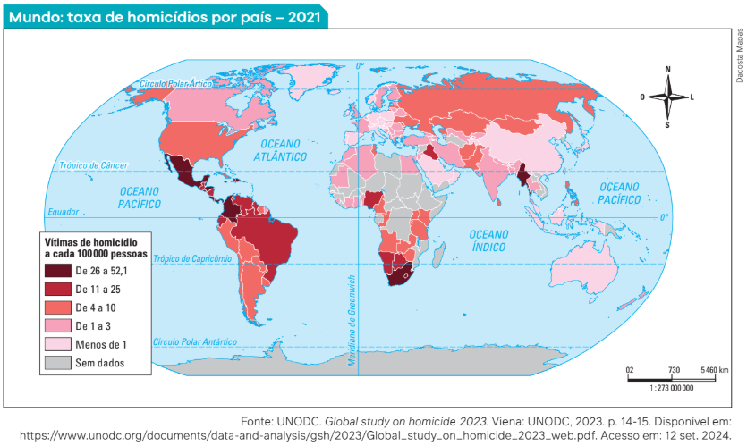
De acordo com o UNODC, considerando as estatísticas globais, a quantidade de homicídios se deve a fatores
como pobreza, desigualdade, crime organizado e violência de gênero contra mulheres. Em 2021, o número elevado
de homicídios esteve relacionado às consequências econômicas trazidas pela pandemia de covid-19, que aumentou a quantidade de mortes ligadas ao crime organizado e à violência de gangues. Estas foram responsáveis por
metade dos homicídios ocorridos no continente americano.
Em todo o planeta, 40% dos crimes foram causados pelo uso de armas de fogo.
Afinal, quem são as vítimas desse tipo de violência? Qual é o perfil das pessoas que perdem a vida em razão dos
crimes de homicídio? De acordo com os dados apurados pelo relatório do UNODC, 81% das vítimas são indivíduos
do sexo masculino. As vítimas mulheres corresponderem a 19% do total, sendo 56% dos homicídios contra elas
praticados no ambiente doméstico e 66% deles efetuados por um parceiro íntimo ou membro da família.

Fonte: UNODC. Global study on homicide 2023. Viena: UNODC, 2023. p. 22. Disponível em: https://www. unodc.org/documents/data -and-analysis/gsh/2023/ Global_study_on_ homicide_2023_web.pdf. Acesso em: 12 set. 2024.
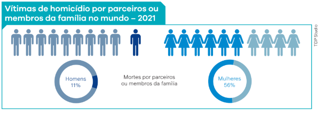
Fonte: UNODC. Global study on homicide 2023. Viena: UNODC, 2023. p. 22. Disponível em: https://www. unodc.org/documents/data -and-analysis/gsh/2023/ Global_study_on_ homicide_2023_web.pdf. Acesso em: 12 set. 2024.
Os dados apontam também que as crianças correspondem a 15% das vítimas, ou 71 600 indivíduos, em números absolutos.
Já 9% representam assassinatos de líderes comunitários, ambientalistas, defensores de direitos humanos, jornalistas e
trabalhadores em missões humanitárias.
No Brasil, também encontramos homicídios relacionados à defesa do meio ambiente, à luta pela terra e ao preconceito contra
a população LGBTQIAPN+. A ONU avalia que, apesar da queda relativa na taxa de homicídios, a violência entre as facções
ligadas ao tráfico de drogas contribuiu para a persistência do número elevado de ocorrências, em especial nas regiões
Norte e Nordeste do Brasil.
Sobre a quantidade e as taxas de homicídios ocorridos no Brasil em um período de dez anos, observe os dados organizados
pelo Atlas da Violência 2023. A sistematização dos dados é realizada desde 2016 pelo Instituto de Pesquisa Econômica
Aplicada (Ipea), órgão governamental vinculado ao Ministério do Planejamento e Orçamento, em parceria com o Fórum
Brasileiro de Segurança Pública (FBSP), organização não governamental fundada em 2006.
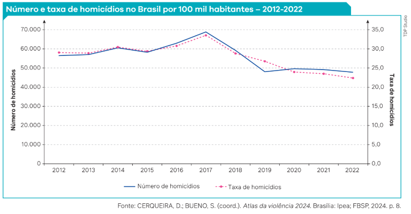
Os estudos sociológicos sobre violência
Os dados apresentados destacam a importância dos estudos sobre a violência presentes em centros de pesquisa de diversas
universidades brasileiras, como o Núcleo de Estudos da Cidadania, Conflito e Violência Urbana (NECVU), criado em 1999 na
Universidade Federal do Rio de Janeiro (UFRJ), pelo sociólogo e professor Michel Misse (1951-). Em 2002, foi criado, na
Universidade do Estado do Rio de Janeiro (Uerj), o Laboratório de Análises da Violência, que conta com a participação, entre
outros, dos sociólogos Ignacio Cano e João Trajano Sento-Sé. O centro de estudos mais antigo sobre o tema, porém, é o Núcleo
de Estudos da Violência (NEV), da Universidade de São Paulo (USP), criado em 1987, ao qual pertencem sociólogos como Paulo
Sérgio Pinheiro (1944-), Sérgio Adorno (1952-) e Nancy Cardia.
Podemos dizer que os estudos sociológicos sobre a violência estão relacionados à própria constituição da Sociologia como ciência.
O crime e a punição fizeram parte dos estudos desenvolvidos por Émile Durkheim. Ele entendia que o crime tinha um papel
importante para a manutenção da ordem e da coesão social, pois a consequente punição da sociedade ao desafio dos valores e das
normas estabelecidas contribuiria para reforçar a solidariedade e os valores coletivos, entendidos pelo autor como invioláveis.
O papel do Estado como detentor do monopólio legítimo da força foi uma das questões debatidas por Max Weber (1864-1920).
Já Karl Marx (1818-1883) pode ser citado aqui por sua percepção e sua descrição da violência presente nas lutas de classes
existentes em diferentes sociedades no decorrer da história.
Sociólogos contemporâneos, além dos brasileiros citados, também se dedicaram ao estudo da violência, tornando-se referências
sobre o tema. Um exemplo relevante foi o francês Pierre Bourdieu (1930-2002).
Bourdieu elaborou o conceito de violência simbólica para definir uma forma de violência que é aparentemente consentida pela
vítima, que não se percebe como tal. A violência simbólica diz respeito a relações de dominação que são percebidas como
“naturais” e “inevitáveis”. Para Bourdieu, a violência simbólica é um mecanismo que se reproduz socialmente e legitima a
dominação de uma classe sobre outra.
A Sociologia pode contribuir para o entendimento dos mecanismos que produzem e reproduzem a violência em nossas sociedades, em todas as suas modalidades:
As representadas pelas diversas formas de violência simbólica.
• As motivadas por disputas políticas de qualquer tipo.
• Sob a forma da criminalidade urbana.
• Na luta pela terra, tanto no Brasil quanto em outros países.
• Como uma forma de opressão.
• Nas diversas formas de submissão da mulher diante dos homens.
• Como discriminação, sob a forma do racismo.
• Na intimidação e nos maus-tratos contra idosos e crianças. Cada uma dessas formas de violência é abordada em capítulos específicos deste livro. Neste capítulo, nos deteremos principalmente na análise sociológica da violência urbana.
Violência e desigualdades sociais
Uma das principais questões do novo milênio entre os países considerados em desenvolvimento, como o Brasil, é a questão da
desigualdade social. Assim como outras sociedades estratificadas, o capitalismo é essencialmente excludente desde sua
consolidação como organização social e econômica, no século XIX. Assim, a desigualdade e a exclusão social não são fenômenos
novos. Pelo contrário, elas são inerentes ao processo de concentração de capital.
Por que então se fala tanto, nas últimas décadas, em exclusão social, se essa não é uma questão recente na história da nossa
sociedade? A “novidade” é motivada pelo fato, como afirma a historiadora brasileira Virginia Fontes, de que a nova forma de
organização da produção capitalista produz seres descartáveis em todas as áreas da vida social. São trabalhadores com pouca
qualificação profissional condenados aos trabalhos informais, são mulheres discriminadas, jovens impossibilitados de ter
educação básica e um primeiro emprego, trabalhadores rurais sem-terra que não têm direito de plantar em terras improdutivas,
entre outros.
No século XXI, com o aumento do desemprego estrutural e das consequentes informalização e uberização da mão de obra em todo
o mundo, a desigualdade social e os índices de concentração de renda se aceleraram cada vez mais.
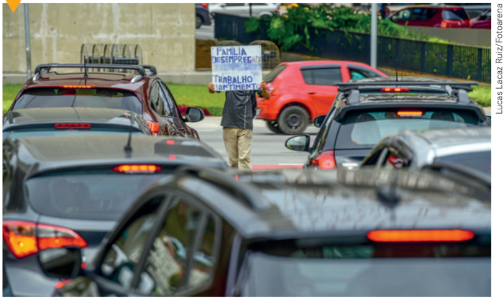
Dados apurados por instituições financeiras e laboratórios de pesquisa econômica de grandes centros universitários revelaram que, entre 1995 e 2021, a população 1% mais rica do mundo era responsável pelo controle de 38% de toda a riqueza produzida nesse período, ao passo que os 50% da população mais pobre ficou com apenas 2%.
Homem pedindo
emprego
e doações
em avenida
movimentada. São
José dos Campos
(SP), 2022.
Esses dados são distintos se comparados regionalmente: enquanto na América Latina uma elite de 10% da população controla 77%
da riqueza, os 50% mais pobres dividem apenas 1% dela. No sentido oposto, a desigualdade e a concentração de renda são
relativamente menores na Europa: a parte mais rica (10% da população) fica com 58% da riqueza total, enquanto os 50% mais
pobres somam 4%.
A pirâmide que vemos adiante, elaborada anualmente pela instituição financeira Credit Suisse, que compõe o Relatório da
Riqueza Global 2023, ajuda a compreender esse quadro de concentração de renda, levando-se em conta a população mundial.
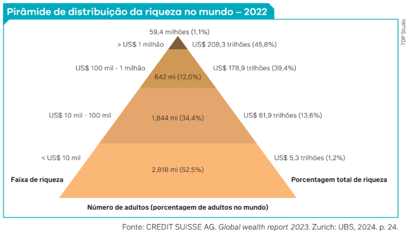
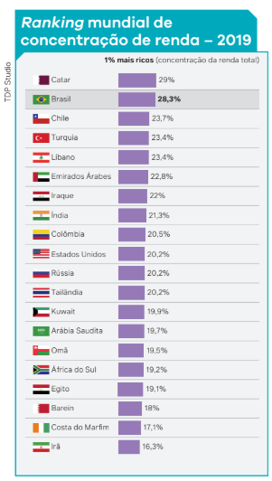
No Brasil, muitas pesquisas socioeconômicas demonstram que, du-
rante a década de 1990, antes da aceleração da precarização estrutural
do trabalho, cerca de 60% da População Economicamente Ativa (PEA)
estava fora do mercado formal de trabalho. Em nosso país, a distribuição
desigual de renda e de riqueza é histórica.
desigual de renda e de riqueza é histórica.
Dados apurados pela Organização das Nações Unidas em 2019 apontavam o Brasil como o segundo país com mais concentração de renda no
mundo, conforme o gráfico “Ranking mundial de concentração de renda
(2019)”.
Utilizando como metodologia um estudo detalhado junto à Receita Federal com base em dados tributários divulgados por esse órgão em julho
de 2021, dois economistas brasileiros, Tatiana Breviglieri e André Correa,
demonstraram, por meio de cálculos matemáticos, que a parte 1% mais
rica da população brasileira acumulou, em 2019, 23,76% da renda nacional – percentual que cresceu quando comparado aos dados de 2012.
PNUD BRASIL. Relatório do desenvolvimento
humano 2019. Brasília, DF: PNUD, 2019. In: BRASIL
tem 2a maior concentração de renda do mundo,
diz relatório da ONU. G1, São Paulo, 9 dez. 2019.
Disponível em: https://g1.globo.com/mundo/
noticia/2019/12/09/brasil-tem-segunda-maior
-concentracao-de-renda-do-mundo-diz-relatorio
-da-onu.ghtml. Acesso em: 21 ago. 2024.
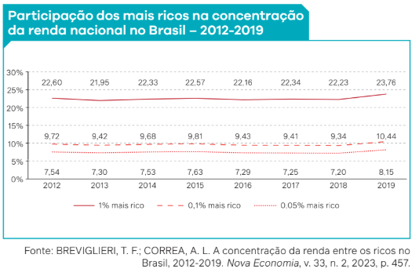
Retomando os dados do Relatório da Riqueza Global
2023, houve um crescimento mundial da quantidade
de milionários durante a crise provocada pela pandemia de
covid-19. Apesar do aumento do desemprego durante a
pandemia, a crise não afetou as classes mais abastadas,
com destaque para o Brasil, que foi recordista no aumento
do número de novos milionários.
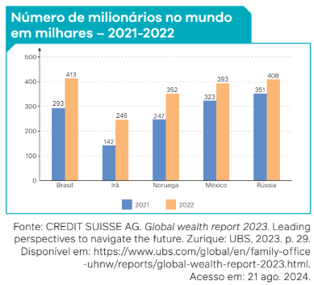
É importante reforçar que a classe trabalhadora não tem meios e perspectivas de estar entre os milionários mencionados nos relatórios. Um aspecto identificador da extrema desigualdade social que atinge os trabalhadores é a política econômica dominante. A partir do ideário neoliberal do chamado “Estado mínimo”, a população perde o acesso aos serviços públicos básicos, como saúde, educação, habitação e infraestrutura urbana. Para o neoliberalismo, o Estado deve ter menos ações em relação à sociedade para que o mercado se regule sozinho e a economia equilibre as desigualdades entre ricos e pobres.
Com a diminuição dos gastos sociais a cada ano, implementado por governos neoliberais, a situação das
pessoas mais pobres torna-se cada vez mais precária. A desigualdade social, que atinge milhões de pessoas no Brasil,
ocasiona a falta de acesso à cidadania. São indivíduos que não têm direitos sociais, civis e políticos, garantidos
originalmente pela Constituição brasileira.
De acordo com as análises do sociólogo Pierre Bourdieu, o mundo globalizado não produz riqueza para
todos. No caso da classe trabalhadora, esse modelo estabelece uma estrutura de precariedade, o trabalho se
torna escasso e desejável a qualquer preço e aqueles que têm trabalho fazem qualquer coisa para mantê-lo.
Essa situação leva à competição generalizada, à luta de todos contra todos, destruindo-se aos poucos os valores
de solidariedade humana. A precariedade afeta homens e mulheres, tornando o futuro incerto, impedindo a crença
em algo melhor, ou podendo gerar uma atitude de resignação, de que tudo “é assim mesmo e não tem mais jeito”.
Segundo o geógrafo brasileiro Milton Santos (1926-2001), a competitividade atual tem “a guerra como norma”.
As pessoas precisam se submeter e vencer o outro, a todo custo. Isso se reflete no individualismo da vida
econômica, da ordem política, na vida social e cotidiana, ou seja, nos comportamentos que significam o desrespeito às
pessoas e que se tornam a base e a justificativa de grande parte das relações sociais atuais.
Violência e ausência de cidadania
Toda forma de violência deve ser repudiada. Alguns aspectos da violência na sociedade estão relacionados com o sistema
capitalista e o modelo neoliberal, por exemplo, que levam à ausência de acesso à cidadania. A violência em si significa
cometer danos a uma pessoa pelo uso da força, como matar, ferir, prender, roubar, humilhar, discriminar, explorar trabalho
alheio, entre outros. A desconsideração pelo outro e a transgressão de uma norma social também caracterizam violência. Os
motivos que levam a uma atitude violenta por parte de um indivíduo podem variar, porém nos interessa estudar a violência
que causa danos a milhões de pessoas cotidianamente e que nem sempre é percebida como violência direta à pessoa. O ato
violento é condenado pelo Código Penal brasileiro sob diversas formas, e aquele que o comete, dependendo da gravidade do
ato, pode sofrer pena de reclusão ou multa.
A Constituição brasileira garante que todo cidadão tenha direito a uma vida
digna, mas quando isso não ocorre podemos considerar que se trata de uma violência. Note que o Código Penal trata apenas
de pessoas concretas que diretamente cometem violência.
Vejamos um caso ocorrido em São Paulo, em 2003, no qual o promotor de justiça José Carlos Blat questionou a quantidade de
ferros-velhos na cidade. Será que aconteciam tantos acidentes de carro para justificar tamanho comércio ou será que o
número de ferros-velhos estaria relacionado com furto e roubos de veículos? A ação fechou três estabelecimentos e todas as
peças roubadas foram apreendidas. Um levantamento da Secretaria da Fazenda apontou que em apenas um dos ferros-velhos
havia cerca de mil carros importados.
O material apreendido alcançava na época o valor de mais de 25 milhões de reais em peças de carros importados.
Posteriormente, foi feito um levantamento para verificar se a ação teria alguma repercussão sobre o número de roubos e
furtos de veículos em São Paulo. Os sindicatos das seguradoras informaram que os delitos caíram em 25% naquele período.
Roubo e furto são crimes previstos no Código Penal, mas como os receptores e revendedores de produtos roubados são
fiscalizados e responsabilizados?
Penitenciárias no Brasil
As penitenciárias são instituições definidas como um espaço voltado para a correção e ressocialização de indivíduos que
provocaram algum tipo de delito considerado grave. Segundo o Código Penal, essas pessoas precisam ser temporariamente
afastadas do convívio social.
No entanto, submeter as pessoas em cumprimento de pena a condições de tratamento desumanas e degradantes reforça a falta
de cidadania e o não cumprimento da função inicial do encarceramento. As condições das penitenciárias brasileiras são, em
geral, muito precárias, o que dificulta a ressocialização das pessoas.
O direito à cidadania inclui o direito à vida digna, como previsto na Constituição brasileira, mas esse direito não condiz
com a realidade vivida pela maioria da população.
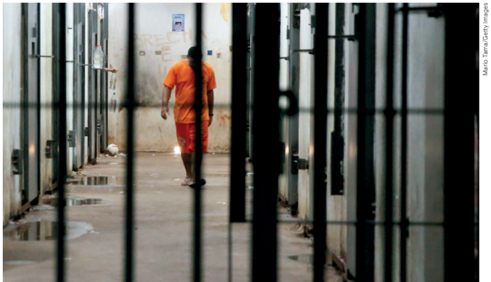
Corredor do
antigo Complexo
Penitenciário de
Pedrinhas, marcado
por rebeliões e
chacinas, atualmente
Complexo
Penitenciário
São Luís. São Luís
(MA), 2015.
Poder do Estado e crime organizado
Os sociólogos Manuel Castells (1942-) e Loïc Wacquant, estudiosos da globalização e da criminalidade urbana, apontam a
necessidade de uma análise global do fenômeno da criminalidade. Dessa forma, chamam a atenção para a necessidade de não
responsabilizar os indivíduos por uma questão que faz parte de um sistema econômico e social maior. Castells afirma que a
criminalidade instituída pelas organizações criminosas e seus associados é um fenômeno novo que afeta a economia, as
relações sociais e principalmente os jovens.
A cosa nostra italiana, a máfia estadunidense, os cartéis colombianos e mexicanos, as redes criminosas nigerianas,
a yakuza japonesa, as máfias russas, os piratas somalis, os traficantes de heroína afegãos, entre outras, formam uma
rede de organizações criminosas que ultrapassam fronteiras nacionais. Realizam comércio de drogas, armas, pessoas,
falsificação de mercadorias, cartões de crédito, identidades, mercadorias roubadas, entre outros crimes.
O poder econômico que essas redes concentram movimenta bilhões de dólares anualmente, em transações que podem ocorrer em
diferentes países em todo o mundo.
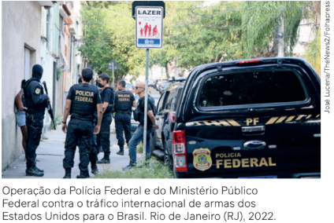
No documentário Notícias de uma guerra particular, Paulo Lins (1958-), autor do livro Cidade de Deus (1997) –
que inspirou o filme homônimo –, comenta que quem consome a maior quantidade de drogas no Brasil não são as pessoas que
vivem em favelas e comunidades periféricas. Aquelas que se envolvem com o tráfico, em sua grande maioria, servem apenas como
mão de obra barata para os grandes traficantes e os consumidores.
Em relação ao narcotráfico na América Latina, Castells afirma que ele depende da demanda
e da exportação de seu principal mercado: os Estados Unidos. A indústria do tráfico é internacional, com divisão de trabalho
e produção. Sua sobrevivência depende de sistemas de lavagem de dinheiro, corrupção e inserção no meio institucional (o
Estado, os políticos e burocratas corruptos). Dessa forma, o crime organizado só é capaz de sobreviver mediante corrupção
e intimidação dos funcionários do Estado e o cumprimento de todo o conjunto de transações assegurado pelo uso de violência.
Outra situação grave se refere ao fornecimento de armas. De onde elas vêm? Segundo o ex-chefe da Polícia Civil do Rio de Janeiro, Hélio Luz (1946-), grande parte das armas em mãos dos traficantes é produzida nos Estados Unidos e na Suíça, mas também na Alemanha, na Rússia e em Israel.
O tema do desarmamento é bastante controverso na sociedade brasileira, sujeito a interpretações e posturas governamentais distintas.
Em 2003, na tentativa de coibir o tráfico de armas, o Congresso brasileiro aprovou o Estatuto do Desarmamento (Lei nº 10.826/2003), que, embora não tenha proibido o uso, possibilitou maior controle das armas de fogo no país. No entanto, em 2019, decretos do governo de Jair Bolsonaro (1955-) voltaram a tornar mais flexível a comercialização de armas e de munição. Desde então, a maior parte dos armamentos apreendida pela polícia, utilizada em crimes comuns, passou a ser de origem legal, como aponta uma pesquisa realizada pela ONG Instituto Sou da Paz. Boa parte desses decretos de 2019 foi revogada pelo novo governo de Luiz Inácio Lula da Silva (1945-), que assumiu a Presidência em 2023.
Diversos estudos, dossiês e comissões parlamentares de inquéritos (CPIs) concluíram que o crime organizado,
como afirma o promotor José Carlos Blat, não sobrevive sem a participação do Estado. Portanto, o que se configura é
que o problema da violência nas grandes cidades diz respeito essencialmente àquilo que Loïc Wacquant denomina de
capitalismo de pilhagem. Ou seja, um grande negócio capitalista internacional que se utiliza de mão de obra barata
(jovens da periferia, na sua maioria negros), não institucionalizada oficialmente e que, por sua vez, traz consequências
para a segurança da população, especialmente das grandes cidades. Balas perdidas nas disputas entre facções ou
durante ações policiais em bairros localizados nas periferias, insegurança nas ruas, morte de milhares de jovens antes
de completarem 18 anos, entre outras situações, são exemplos das consequências do crime organizado no cotidiano.
Quando o Estado e suas instituições (polícia e Exército, por exemplo) não são eficientes no combate à
criminalidade, quais as soluções apresentadas pelos dirigentes de Estado e
governo para diminuir e combater a criminalidade urbana e o narcotráfico?
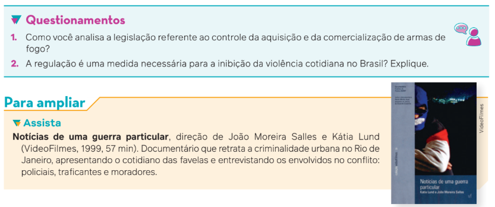
O Estado e a “tolerância zero”
Loïc Wacquant nos fornece uma possível resposta ao apontar que, com a ausência ou a diminuição de toda rede
de proteção social (como hospitais, escolas, saneamento e assistência social), não resta alternativa para o Estado
senão investir na repressão, substituindo sua função de “Estado previdência” pela função de “Estado penitência”.
Dessa forma, o Estado se torna um Estado penal, deixando de lado seu papel de assistência aos cidadãos e de
garantia de seus direitos. Ciente da situação que cria (violência, insegurança, entre outras consequências), tem
como única solução aumentar a repressão, a vigilância, o quantitativo de cárceres e o aparato militar.
Um dos primeiros grandes exemplos dessa orientação descrita por Wacquant e seguida por diversos gestores
públicos (prefeitos, governadores, presidentes da República) foi a política da “tolerância zero”, praticada na cidade
de Nova York nos anos de 1990. Essa expressão é repetida exaustivamente pelos governantes em várias partes do
mundo até os dias de hoje, com maior ênfase em momentos eleitorais. Mas do que se trata, afinal?
Em Manhattan, na administração do prefeito Rudolph Giuliani, entre 1994 e 2001, houve um aumento do efetivo
policial de 34 mil para 46 mil, enquanto na área de serviços sociais houve uma redução de 30% no número de servidores.
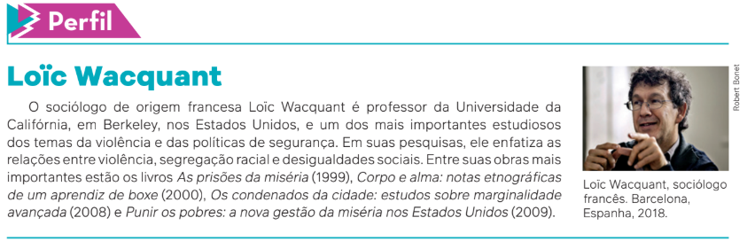
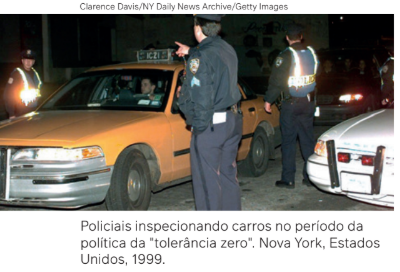
A política da “tolerância zero” tinha como essência a proposta
de acabar com a criminalidade urbana, que seria simultaneamente
a causa e o resultado da violência, principalmente nas áreas ditas
“sensíveis”, isto é, periferias, favelas, guetos negros, bairros pobres
e degradados. Além disso, seria necessário afastar das ruas, dos
parques e dos trens os pobres, entendidos como “ameaçadores à
ordem”. Essa iniciativa parte da ideia de que o abandono das ruas
favorece a criminalidade.
No Brasil, em cidades como Rio de Janeiro (RJ), no mesmo sentido das
políticas adotadas em Nova York, algumas medidas foram
tomadas, como o reforço em termos quantitativos e o aumento dos
salários de policiais militares e de guardas municipais –
que também obtiveram autorização legal para o porte de armas de fogo.
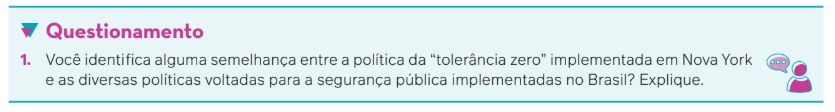
Criminalização da pobreza
Criminalização da pobreza
Em muitos discursos, um perfil muito específico da população, formado por trabalhadoras sexuais, pessoas em
condição de rua, crianças em situação de abandono, trabalhadores sem-teto, entre outros, são apontados como
os “inimigos” da ordem. Dessa forma, pessoas que vivem em situações de vulnerabilidade social e econômica se
tornam os alvos do poder público, que os apontam como as possíveis causas do favorecimento da criminalidade.
Trata-se de mais uma face das políticas de criminalização da pobreza.
Quando se recorre ao aparato policial e à repressão do Estado como forma de se combater o problema da
violência urbana e da criminalidade, muitas vezes não se leva em conta a causa principal desse problema, que está
associada à própria forma de organização da sociedade como um todo. Além disso, são constantes as denúncias
de que o aparelho repressor oficial passa por tentativas de corrupção e “desvios de conduta”. O termo remete a
policiais que se associam aos grupos e organizações criminosas.
Relação entre Estado e criminalidade: estudos de caso
Um exemplo da relação entre o poder estatal e a criminalidade pode ser encontrado na capital do estado do
Rio de Janeiro e em cidades vizinhas. Trata-se do caso das chamadas milícias. Esse fenômeno tem origem durante
o período da Ditadura Civil-Militar no Brasil, quando esses grupos eram conhecidos como “esquadrões da morte”.


Esses esquadrões eram formados por grupos armados, com postos principalmente de ex-policiais e ex-bombeiros que expul sam o tráfico de determinadas comunidades, mas ocupam seu lugar, passando a cobrar taxas fixas dos moradores em troca de segurança. Eles também passaram a controlar serviços como transporte, transmissão de TV a cabo e de internet, distribuição de gás de cozinha e grilagem de terras para construção de moradias irregulares de baixo custo.
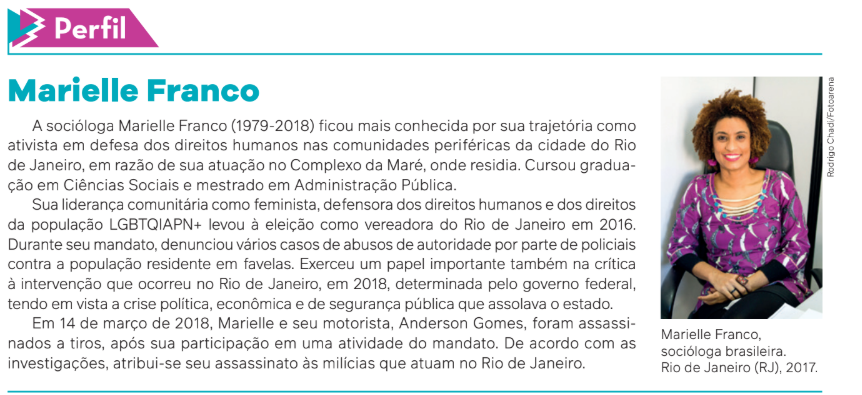
Política carcerária
O aumento do fenômeno da violência no contexto político atual também apresenta outras características.
Uma delas é que, se por um lado há uma diminuição dos gastos sociais do Estado e a degradação das condições
de vida dos indivíduos, por outro o Estado investe cada vez mais no aumento dos recursos penitenciários.
O jornalista e ativista David A. Love, analisando os dados sobre as prisões estadunidenses, mostrou que,
em 2015, em 16 estados do país havia mais pessoas presas do que em dormitórios de faculdade. Em estados
como o Alabama, por exemplo, apesar de a população negra ser de 27%, ela representava 63% da população
carcerária. Na Louisiana, na cidade de New Orleans, um em cada 14 homens negros estava preso.
Love constata que, enquanto aumentavam os investimentos para a construção de prisões, havia cada vez
menos recursos direcionados para as escolas.
A população carcerária dos Estados Unidos seria a primeira maior do mundo em relação ao total de sua
população e a segunda maior em números absolutos. De acordo com dados divulgados pelo Departamento
de Justiça do país, entre 2021 e 2022 a população carcerária apresentou um aumento de 2,1% chegando a
1,23 milhão de presos.
Ao lado dos Estados Unidos, China (em primeiro lugar) e Brasil (em terceiro) são os países com o maior
número de pessoas encarceradas do mundo. Na China, o número de encarcerados era de mais de 1 milhão
e 600 mil pessoas em 2017. Em quarto lugar consta a Índia, que tinha pouco mais de 478 mil detentos em 2021.
Em nosso país, tivemos um aumento de 0,8% no número de pessoas encarceradas entre dezembro de 2022
e junho de 2023, segundo o Sistema de Informação do Departamento Penitenciário Nacional, chegando a um
total de 839,7 mil detentos. Analisando esse número em relação ao total da população – em termos relativos,
portanto –, o Brasil ocupava a 26ª posição em 2021, com 322 presos a cada 100 mil habitantes. Nesse mesmo ano,
os três primeiros lugares, proporcionalmente, eram os Estados Unidos, com a taxa de 639/100 mil; El Salvador,
com 562/100 mil; e o Turcomenistão, com 552/100 mil.
No entanto, considerando a tendência a longo prazo, nos Estados Unidos, houve uma diminuição da
quantidade de detentos em 21,7% entre 2012 e 2022. No Brasil, por sua vez, entre dezembro de 2013 e junho
de 2023, a população carcerária cresceu 44%.
Segundo o advogado Felippe Angeli, do centro de pesquisa Justa, que acompanha a gestão do sistema
de justiça nacional, a diferença de perspectiva na comparação entre os dois países é que a política de guerra
às drogas por parte das autoridades brasileiras conduz ao encarceramento em massa, como se essa fosse a
única solução possível.
De acordo com o sociólogo e pesquisador Daniel Hirata, coordenador do Grupo de Estudos dos Novos
Ilegalismos, da Universidade Federal Fluminense, a tese do encarceramento massivo é uma tendência mundial.
Ele afirma que tal postura é uma forma muito simplista de lidar com essa realidade.
Hirata chama essa opção por uma política pública de combate à violência de populismo penal, na medida em que tais políticas são muito bem-vindas popularmente e contribuem para a conquista de um número de votos expressivos nas eleições gerais de diversos países.
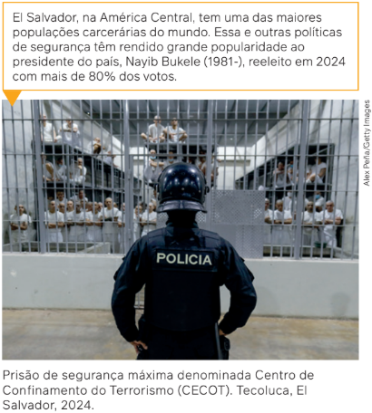
Para o advogado Angeli, o incentivo à política de encarceramento em massa significa a alocação de uma quantidade cada vez maior de recursos financeiros para a manutenção dos presos em condições sub-humanas, sem a perspectiva de que essa opção signifique a interrupção de seu envolvimento com a criminalidade. Na prática, segundo Angeli, na grande maioria dos países que recorrem a essa política, como é o caso do Brasil, a população não passou a se sentir mais segura, o tráfico e o consumo de drogas ilícitas não diminuíram e não se reduziu a criminalidade.
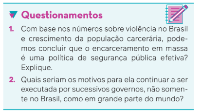
Controle dos pobres e racialização das políticas de segurança pública
Ao comparar os dados do Brasil e dos Estados Unidos a respeito das suas populações carcerárias,
observamos que em ambos os países ela é composta majoritariamente de pessoas negras. No Brasil,
o percentual de negros entre a população carcerária aumentou 381,3% entre 2005 e 2022,
correspondendo à taxa recorde de 68,2% nesse último ano citado, de acordo com dados divulgados em 2023
pelo Fórum Brasileiro de Segurança Pública.
A advogada estadunidense e militante pelos direitos civis Michelle Alexander (1967-),
autora da obra A nova segregação: racismo e encarceramento em massa (2010),
corrobora as teses de Wacquant. Segundo ela, a racialização está presente em qualquer notícia
que envolva crimes nos Estados Unidos, como demonstram diversas pesquisas realizadas nesse sentido.
A associação entre a população negra e o crime está tão presente no pensamento das pessoas que
70% da população estadunidense associa imediatamente qualquer ocorrência à cor da pele do criminoso
como negra, mesmo sem ter acesso a qualquer tipo de informação.
Portanto, trata-se da continuidade, neste século XXI, da lógica do Estado penal contra a população negra,
apontada pelos estudos de Wacquant. Podemos acrescentar à lógica o conceito de poder disciplinar,
formulação do filósofo francês Michel Foucault (1926-1984) para designar a prisão e outras instituições
que conformam uma sociedade da vigilância, em que o encarceramento, nesse caso, cumpre o papel de isolar
aqueles que se distanciam da norma e ameaçam a ordem vigente.
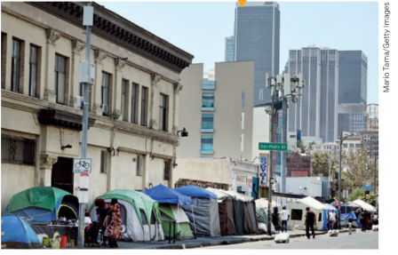
Wacquant afirma que não existe vínculo algum comprovado em pesquisas entre índice de criminalidade
e índice de encarceramento. Ou seja, a violência e o tráfico de drogas, nos Estados Unidos, não diminuíram
com a política da “tolerância zero”, pois a repressão não teve influência alguma sobre os motores dessa
criminalidade. Essa política teria como consequência não uma melhora na segurança pública,
mas a criação de uma “economia de pilhagem” nos espaços em que a economia oficial não existe,
como por exemplo aqui no Brasil, nas favelas e nas periferias das grandes cidades.
Acampamento
de pessoas em
situação de rua em
região conhecida
como Skid Row.
Los Angeles,
Estados Unidos,
2024.
Loïc Wacquant deixa mais explícito o papel da polícia na ordem econômica neoliberal, quando afirma que ela cumpre a tarefa que a assistência social não faz. Sendo o desemprego estrutural uma realidade desse modelo econômico, o Estado deixa de promover políticas de controle da pobreza por meio da promoção do trabalho assalariado e passa a exercê-lo pelo uso das forças policiais e pelos tribunais.
Luiz Eduardo Soares (1954-), sociólogo e ex-secretário nacional de segurança pública do Ministério da Justiça, apontou em várias entrevistas que há um comportamento grave da polícia em relação aos jovens negros entre 16 e 24 anos de idade. Quando a polícia entra nas comunidades ou aborda os jovens da periferia e das favelas em outros contextos, todos são considerados suspeitos ou “elementos perigosos”.
Na história do tráfico no Brasil, as ações do Estado resultaram em chacinas, como as de Acari (1990), Candelária (1993), Vigário Geral (1993) e Jacarezinho (2021), no Rio de Janeiro, além de Castelinho (2002), Várzea Paulista (2012), Osasco (2015) e Baixada Santista (2024), em São Paulo.
Afinal, quem são os verdadeiros responsáveis pela violência? O policiamento ostensivo nas ruas pode acabar com a criminalidade? Ou será que, como enfatiza o sociólogo Loïc Wacquant, grande parte da classe trabalhadora, “excluída” pelo neoliberalismo, é entregue ao seu próprio destino, vivendo da economia de pilhagem das ruas, cada vez mais dominadas por atividades criminosas controladas por poderosas redes internacionais?
O problema da violência não se limita a questões de ordem pessoal, como o “caráter”, ou à falta de maior repressão por parte do Estado. Ela deve ser analisada, do ponto de vista sociológico, com base na complexa rede de relações sociais existentes nas sociedades, nos interesses de grupos e classes sociais e nas desigualdades sociais.